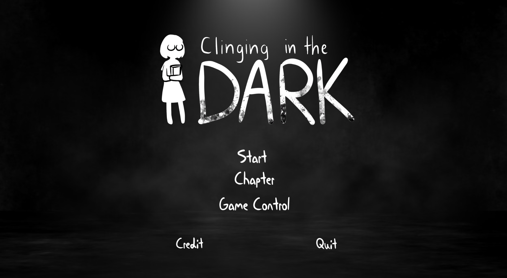
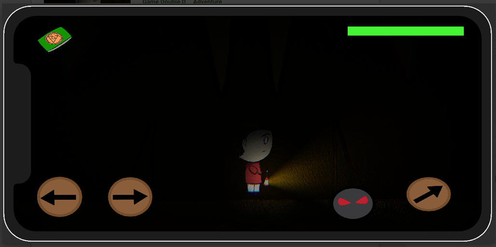
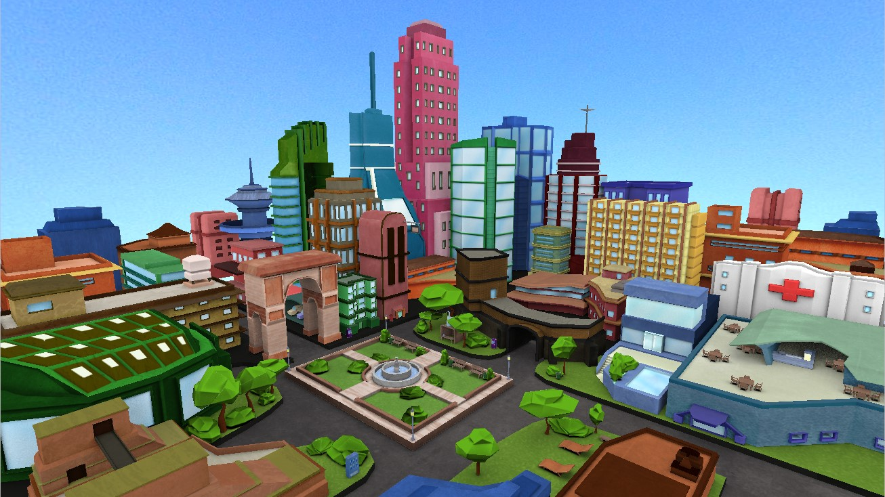
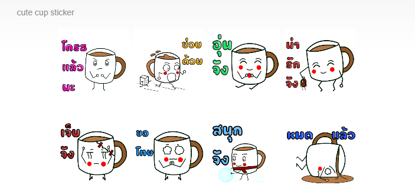

Project

Cling-in-the-dark
เป็นเกมแรกที่สร้างจาก Unity หลังจากที่เริ่มเรียน โดยทำกับเพื่อนอีก 2 คน โดยเป็นเกมที่เน้นเนื่องเรื่อง โดยเป็น เด็กนักเรียนกับหนังสทอนิทานForgottenShrine
ผลงาน Game Trailer ที่จัดขึ้นโดยใช้ Unity3D+HDRP เพื่อ ศึกษาการจัดฉากแสง มุมกล้อง และสภาพแวดล้อม เพื่อให้ออกดูดีที่สุด โดยจัดเป็นแนวแฟนตาซี 
Darkness
Darkness เป็นดกม 2D platformer mobile game ที่ทดลองทำลงใน Google play store 
C.V.V
ผลงาน Model low polygon ใน Maya เป็นผมงานกลุ่ม 3 คน ที่เน้นใช้พื้นฐาน Model และการทำ Texture